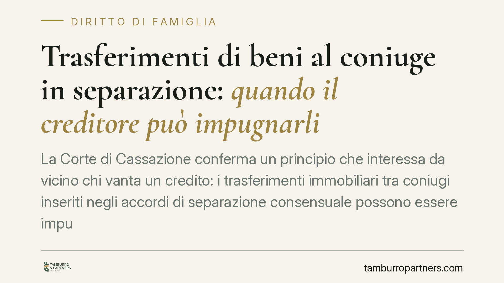

Trasferimenti di beni al coniuge in separazione: quando il creditore può impugnarli
La Corte di Cassazione conferma un principio che interessa da vicino chi vanta un credito: i trasferimenti immobiliari tra coniugi inseriti negli accordi di separazione consensuale possono essere impugnati per simulazione quando servono a sottrarre beni all'esecuzione. L'omologazione del giudice non mette al riparo le clausole patrimoniali autonome. Un chiarimento con ricadute concrete sia per i creditori sia per chi negozia una separazione.

Il caso e il principio affermato
La vicenda è ricorrente nella pratica. Un soggetto indebitato, prima o durante un'azione esecutiva, trasferisce i propri immobili al coniuge nell'ambito di una separazione consensuale. Il credito resta insoddisfatto perché il debitore risulta ormai privo di patrimonio aggredibile.
La Corte di Cassazione ha chiarito che il creditore non è privo di rimedi. Quei trasferimenti possono essere contestati per simulazione assoluta: si tratta di atti solo apparenti, dietro ai quali non esiste una reale volontà di trasferire la proprietà, ma unicamente l'intento di svuotare il patrimonio del debitore per renderlo inaggredibile.
Il punto centrale è che l'omologazione dell'accordo di separazione da parte del giudice non sana i vizi delle clausole patrimoniali. L'omologa verifica la conformità dell'accordo agli interessi della famiglia e dei figli, ma non attribuisce alle pattuizioni economiche una patente di intangibilità verso i terzi.
Inquadramento normativo
Il riferimento è l'art. 1414 del codice civile, che disciplina gli effetti della simulazione. Il contratto simulato non produce effetti tra le parti (comma 1). Quando poi le parti hanno voluto concludere un contratto diverso da quello apparente, ha effetto tra loro il contratto dissimulato, se ne sussistono i requisiti di sostanza e forma (comma 2).
Nella simulazione assoluta, in particolare, le parti fingono di stipulare un atto che in realtà non vogliono affatto: il trasferimento esiste solo sulla carta. Il creditore che dimostri questa apparenza ottiene una pronuncia che accerta l'inefficacia dell'atto, con la conseguenza che il bene rientra idealmente nel patrimonio del debitore e torna aggredibile.
È un rimedio distinto dall'azione revocatoria (art. 2901 cod. civ.), con cui spesso viene confuso. Nella revocatoria l'atto è reale ma dannoso per il creditore e viene dichiarato inefficace nei suoi confronti. Nella simulazione l'atto è invece finto sin dall'origine. La scelta tra i due strumenti dipende dalla ricostruzione dei fatti e dalle prove disponibili.
Cosa cambia per il creditore
La pronuncia rafforza la posizione di chi vanta un credito e teme manovre difensive del debitore. Il messaggio è netto: la cornice della separazione consensuale non è un porto sicuro per gli atti dispositivi finalizzati a frodare i terzi.
Restano però le difficoltà probatorie. La simulazione va provata, e il coniuge che riceve i beni è un terzo rispetto al credito: occorrono elementi che rivelino l'apparenza dell'operazione, come l'assenza di un reale corrispettivo, la contiguità temporale con l'azione esecutiva, la permanenza dell'uso del bene in capo al debitore.
Cosa cambia per chi si separa
Il rovescio della medaglia riguarda le coppie in separazione. Le clausole di trasferimento immobiliare tra coniugi sono legittime e diffuse, ma vanno costruite con attenzione quando uno dei due ha esposizioni debitorie. Un assetto patrimoniale sbilanciato e privo di giustificazione può esporre l'atto a contestazioni future, anche a distanza di tempo.
Cosa fare in concreto
- Verifica tempestivamente il patrimonio del debitore. Consultare i registri immobiliari consente di intercettare trasferimenti sospetti e di valutare l'azione più efficace.
- Raccogli gli indizi di simulazione. Documenta l'assenza di pagamento del prezzo, la vicinanza temporale con il credito e la permanenza del godimento del bene in capo al debitore.
- Valuta la scelta tra simulazione e revocatoria. Sono rimedi diversi con presupposti diversi: la strategia va calibrata sui fatti concreti prima di agire.
- Non rinviare. Alcuni rimedi sono soggetti a termini di prescrizione o decadenza; un'analisi precoce evita di perdere tutele.
- Se stai negoziando una separazione, cura la coerenza economica delle clausole patrimoniali e conserva traccia dei corrispettivi reali, per prevenire contestazioni.
La lezione della Corte è di metodo: la forma dell'accordo non prevale sulla sostanza dell'operazione. Consigliamo di affrontare queste situazioni con una valutazione documentale accurata, tanto dal lato di chi deve recuperare un credito quanto da quello di chi vuole definire una separazione senza esporsi a rischi futuri.
Disclaimer
Contributo informativo a cura di Tamburro & Partners - Avv. Giuseppe Tamburro. Non costituisce parere legale.
Ogni famiglia ha il suo equilibrio.
Separazione, divorzio, affidamento, assegno: se vuoi un confronto riservato su una specifica situazione, scrivi allo studio. Ti rispondiamo entro un giorno lavorativo.